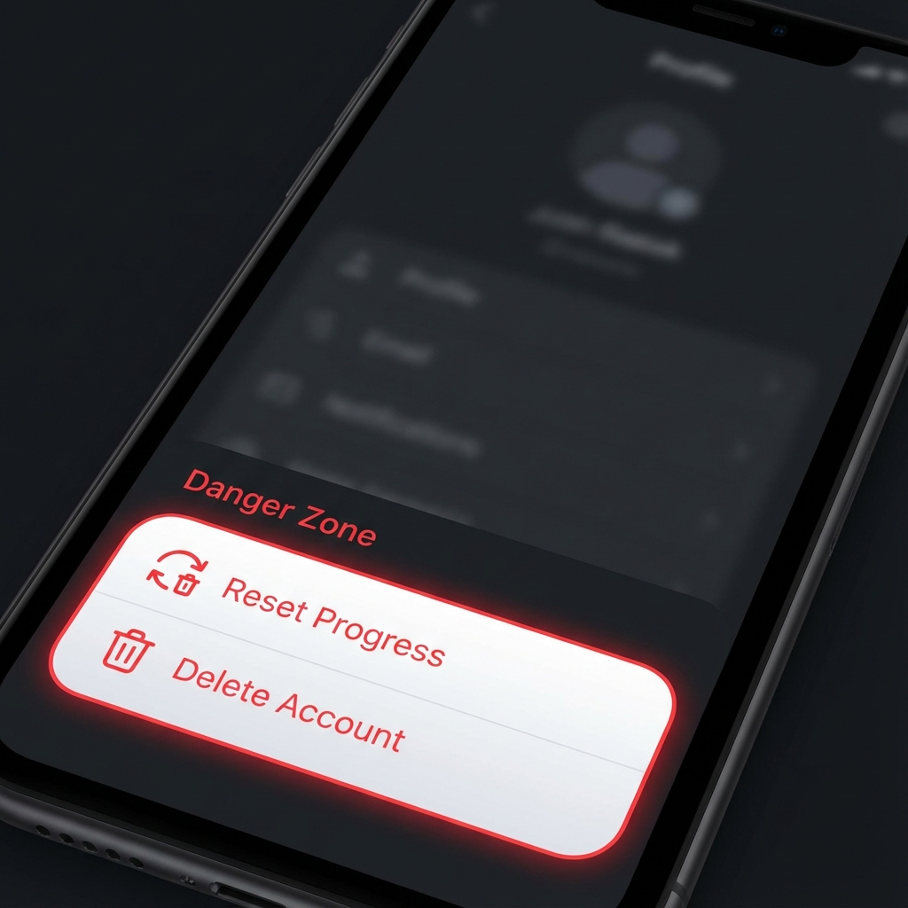

Gittiğinizi görmek bizi üzüyor. Hesabınızı ve ilgili tüm verileri kalıcı olarak silmek istiyorsanız, lütfen MyAnimeDex mobil uygulamasındaki aşağıdaki adımları izleyin.
Uygulamayı açın ve alt gezinme çubuğundaki simgeye dokunarak Profil sekmesine gidin.
Profil sayfasının en altına, "Tehlike Bölgesi" etiketli bölümü görene kadar kaydırın.
"Hesabı Sil" düğmesine dokunun.

Tehlike Bölgesi bölümünün ekran görüntüsü
Bir onay iletişim kutusu görünecektir. Hesabınızı silmek istediğinizi onaylayın. Oturumunuz hemen kapatılacaktır.
Hesabınıza erişemiyorsanız veya hesap silme konusunda manuel yardıma ihtiyacınız varsa, lütfen destek ekibimizle iletişime geçin. Talebinizi 48 saat içinde işleme koyacağız.
E-posta Desteği:
support@myanimedex.com
Lütfen talebinize kullanıcı adınızı ve hesabınızla ilişkili e-posta adresini ekleyin.